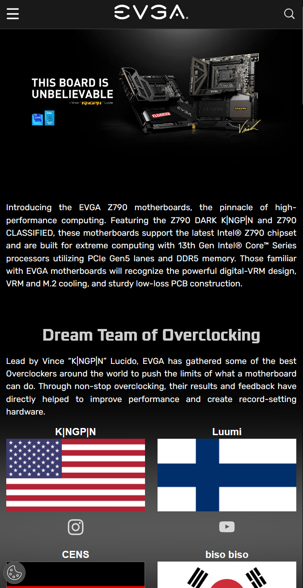

Repition

I believe Netlfix reflects the order of importance very well. Size, color, and contrast are all at use here, and that reflects how users operate the site as well. Because they used this design principle, you focus in what they're selling, the content they're offering, which only inlfuences the user.
I believe Netlfix reflects the order of importance very well. Size, color, and contrast are all at use here, and that reflects how users operate the site as well. Because they used this design principle, you focus in what they're selling, the content they're offering, which only inlfuences the user.
Clean Design
This is website that creates PC's for anyone who wants one, it's as simple as choosing a pre-built pc or picking the parts yourself. The spacing around objects gives a simple, yet classy feeling to the user. This design philsophy comes from how all the fonts are spaced, nothing is too close, creating the feeling of complexity.
This is website that creates PC's for anyone who wants one, it's as simple as choosing a pre-built pc or picking the parts yourself. The spacing around objects gives a simple, yet classy feeling to the user. This design philsophy comes from how all the fonts are spaced, nothing is too close, creating the feeling of complexity.
Visual Hierarchy
I believe Netlfix reflects the order of importance very well. Size, color, and contrast are all at use here, and that reflects how users operate the site as well. Because they used this design principle, you focus in what they're selling, the content they're offering, which only inlfuences the user.
I believe Netlfix reflects the order of importance very well. Size, color, and contrast are all at use here, and that reflects how users operate the site as well. Because they used this design principle, you focus in what they're selling, the content they're offering, which only inlfuences the user.